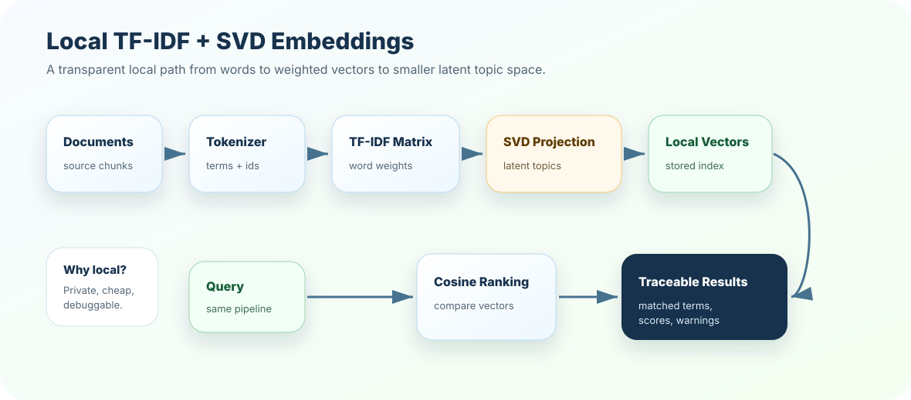

Before neural embeddings, there was a powerful local idea: represent documents by important words, then compress that large word-space into smaller topic-like dimensions. TF-IDF + SVD is not the newest tool, but it is one of the best ways to understand retrieval engineering honestly.
How to read this chapter
See it as a learning bridge: TF-IDF teaches sparse lexical weighting; SVD teaches dimensionality reduction and latent topics.
Respect local engineering: local methods are transparent, private, cheap, and easy to debug.
Know the limits: lexical methods struggle with paraphrase, multilingual meaning, and deep semantics.
Think production: local retrieval can be a baseline, fallback, privacy-preserving mode, or hybrid partner with neural embeddings.
Local embeddings are like a transparent workshop. You can see the words, weights, scores, and failure points instead of treating retrieval as a black box.
Core ideaTF-IDF turns documents into sparse word-importance vectors. SVD compresses those vectors into fewer dimensions that capture broader latent patterns.
Sub-topic 1 of 14
Why Local Embeddings Matter
At a glance
TF-IDF is simple, local, explainable, and strong for exact terms.
SVD reduces high-dimensional word vectors into smaller latent vectors.
Local methods are useful when privacy, cost, offline demos, or transparency matter.
They are not a replacement for modern neural embeddings in every scenario.
Many learners jump directly to cloud embeddings. That works, but it can hide the basics. TF-IDF + SVD helps you understand what retrieval is doing: which terms mattered, how documents were represented, and why a result ranked high.
Local embedding north starUse local methods when you need transparent, cheap, private, and debuggable retrieval behavior.
Do not pretend it understands every paraphrase. Use it where its strengths match the product need.
01
Build word importance
TF-IDF rewards terms that are important in one document but not common everywhere.
02
Create sparse vectors
Each document becomes a vector across vocabulary terms.
03
Reduce dimensions
SVD compresses sparse vectors into latent topic dimensions.
04
Evaluate honestly
Test exact-term, paraphrase, stale-content, and domain-specific queries separately.
Sub-topic 2 of 14
Real-Life Analogy: Library Shelves and Topic Aisles
Imagine a library. TF-IDF is like looking at the labels on every book and asking, "Which words make this book distinctive?" If every book says "the" and "guide," those words do not help. But "OAuth," "refund," "Kubernetes," or "probation" can tell you a lot.
SVD is like reorganizing those many labels into bigger topic aisles: security, finance, HR, deployment, support. You lose some detail, but you gain a smaller map that can reveal patterns.
Mental picture
TF-IDF asks: which words are important here?
SVD asks: can we compress word patterns into fewer topics?
Search asks: which document vector is closest to the query vector?
Sub-topic 3 of 14
TF-IDF
TF-IDF means Term Frequency-Inverse Document Frequency. The phrase sounds heavy, but the intuition is simple.
Term Frequency
How often does a word appear in this document? If "refund" appears often in a refund policy, it matters.
Inverse Document Frequency
How rare is the word across the corpus? If every document says "company," it is less useful.
TF-IDF Weight
Important locally plus rare globally. That combination makes the word a stronger retrieval signal.
Simple intuition
high term frequency + rare across corpus = strong signal
high term frequency + common everywhere = weak signal
low term frequency + rare across corpus = possible niche signal
Sub-topic 4 of 14
SVD and Latent Topics
TF-IDF creates very large sparse vectors. If your vocabulary has 20,000 terms, every document vector has 20,000 positions. Most are zero. SVD compresses this space into fewer dimensions that capture patterns across terms and documents.
Latent Semantic Analysis
What SVD gives you
With TF-IDF + SVD, documents that share related word patterns can become closer in a smaller latent space. This is often called Latent Semantic Analysis. It is not the same as modern neural semantics, but it is a valuable conceptual and production baseline.
Before SVD
Vocabulary space
Huge, sparse, interpretable term vectors.
After SVD
Latent space
Smaller, denser, topic-like vectors.
Benefit
Compression
Lower storage, less noise, and broader topic matching.
Risk
Lost detail
Compression can blur exact identifiers or critical rare terms.
Sub-topic 5 of 14
End-to-End Workflow
Local embedding pipeline
documents
-> tokenize and clean
-> build vocabulary
-> compute TF-IDF matrix
-> fit SVD / latent projection
-> store document vectors
query
-> same tokenizer
-> same vocabulary
-> TF-IDF query vector
-> same SVD projection
-> similarity search
The key phrase is same. The query must use the same tokenizer, vocabulary, IDF values, and projection learned from the document corpus. Otherwise, comparison becomes unreliable.
Sub-topic 6 of 14
What It Is Good At
Exact terms
Error codes and IDs
TF-IDF can strongly preserve signals like ERR-429, SKU codes, policy IDs, and API names.
Privacy
Local processing
No document text leaves your machine or approved environment.
Cost
No embedding API bill
Great for prototypes, public learning projects, demos, and constrained environments.
Debuggability
Explainable scores
You can inspect vocabulary, weights, query terms, and missing tokens.
Sub-topic 7 of 14
What It Misses
TF-IDF is not a deep language understanding system. SVD helps, but it does not magically become a modern embedding model.
L01
Paraphrase gaps
Example: "rotate keys" may not match "regenerate credentials" strongly unless terms overlap or SVD captures the pattern.
L02
Vocabulary mismatch
Example: user says "PTO"; documents say "paid time off." Token normalization matters.
L03
Context blindness
Example: word counts do not understand negation, hierarchy, or procedural order deeply.
L04
Compression trade-off
Example: SVD can blur rare but important identifiers if dimensions are too low.
Sub-topic 8 of 14
Architecture View

Local TF-IDF + SVD keeps the full retrieval pipeline inspectable: tokenizer, vocabulary, weights, projection, vectors, and ranking.
Traceable local retrieval
query: "rotate api key"
tokens: ["rotate", "api", "key"]
top weighted terms: api, key, rotate
top document: "Rotate API credentials safely"
warning: lexical match strong; check active metadata before trusting
Sub-topic 9 of 14
Practical Example
In production, you would usually use a numeric library such as scikit-learn for TF-IDF and TruncatedSVD. In this course, the hands-on lab uses a tiny pure-Python version so the moving parts are visible.
The project adds a small latent-topic projection to mimic the SVD idea: reducing many term weights into fewer topic dimensions. It is intentionally tiny, but the mental model transfers to real TruncatedSVD.
Sub-topic 10 of 14
Production Considerations
Production gear
Tokenizer version: changing tokenization changes vectors and rankings.
Vocabulary freeze: query-time vocabulary must match the index vocabulary.
IDF drift: adding many documents changes global term rarity and may require rebuilds.
SVD dimensions: too few dimensions lose detail; too many dimensions keep noise.
Explainability: log top query terms, matched terms, and missing tokens.
Hybrid use: pair local lexical retrieval with neural embeddings when paraphrase and exact terms both matter.
Baseline value: use TF-IDF as a regression baseline before expensive embedding changes.
Sub-topic 11 of 14
Common Mistakes
M01
Calling TF-IDF semantic search
Symptom: users expect paraphrase understanding that lexical matching cannot provide.
Better move: explain it as lexical weighting with optional latent compression.
M02
Using a different query vocabulary
Symptom: query vectors do not align with document vectors.
Better move: persist vocabulary, IDF values, and projection parameters.
M03
Removing important tokens during cleaning
Symptom: error codes, API names, and policy IDs vanish.
Better move: design domain-aware tokenization and stop-word rules.
M04
Over-compressing with SVD
Symptom: different policies or products become too similar.
Better move: tune dimensions using retrieval evals, not aesthetics.
M05
Ignoring paraphrase failures
Symptom: users ask natural questions and retrieval misses correct docs.
Better move: add synonyms, query expansion, or neural/hybrid retrieval.
M06
No rebuild strategy
Symptom: new documents change IDF behavior unpredictably.
Better move: version vocabulary, IDF, projection, and index releases.
M07
Not logging matched terms
Symptom: teams cannot explain why a result ranked high.
Better move: include matched terms and top weighted query terms in traces.
M08
Replacing neural embeddings everywhere
Symptom: local lexical retrieval is forced into tasks needing semantic understanding.
Better move: use local methods as baseline, fallback, exact-term engine, or hybrid partner.
Sub-topic 12 of 14
Interview-Level Understanding
A strong answer sounds like this: "TF-IDF represents documents using term importance, and SVD compresses that high-dimensional sparse matrix into lower-dimensional latent vectors. It is local, explainable, cheap, and good for exact terms, but it is weaker than neural embeddings for paraphrase and deep semantic matching."
Senior signal
How to position it in architecture
Use TF-IDF + SVD as a baseline, offline fallback, privacy-preserving retrieval option, exact-term retrieval component, or hybrid search partner. Do not oversell it as universal semantic understanding.
Sub-topic 13 of 14
Mini Assignment
Take ten documents from a domain you know. Identify five exact-term queries and five paraphrase-heavy queries. Predict where TF-IDF will perform well, where SVD may help, and where neural embeddings or hybrid retrieval will likely be better.
Sub-topic 14 of 14
Points To Remember
TF-IDF turns documents into sparse word-importance vectors.
SVD compresses sparse vectors into smaller latent-topic vectors.
Local retrieval is transparent, private, cheap, and useful as a baseline.
Lexical methods are strong for exact terms but weaker for paraphrase.
Production systems version tokenizer, vocabulary, IDF, projection, and index releases.
Next, test the local retrieval mental model in the quiz, then build a tiny TF-IDF search lab in exercises and project.